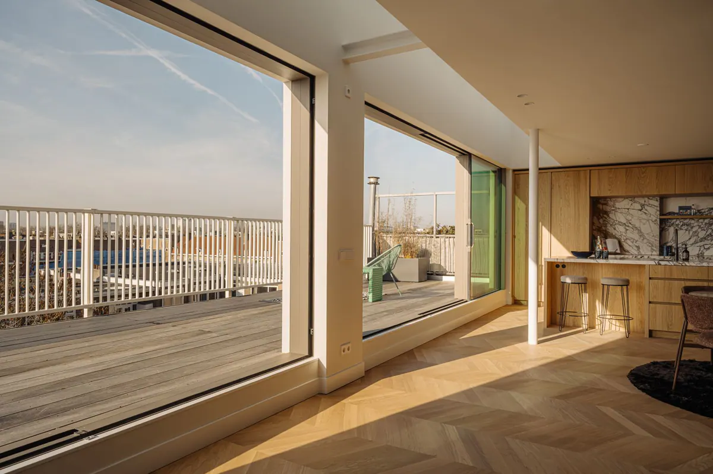

Nieuwbouwfotografie: modelwoningen, opleveringen en elke fase.
Voor nieuwbouw fotografeer ik de modelwoning voor de verkoop, leg ik de oplevering vast en kom ik per fase terug. Steeds in dezelfde stijl, zodat het hele project één verhaal vertelt.
- Ruim 2.400 woningen gefotografeerd
- Eén vaste fotograaf en stijl

Wat ik maak
- Foto’s, video en een 360°-tour van de modelwoning, voor de verkoop.
- Foto’s bij de oplevering, voor het opleveringsrapport.
- Vastlegging per bouwfase, in dezelfde stijl.
- Alles binnen 3 werkdagen na elke opname.
Voor de verkoop
Een modelwoning verkoopt de rest van het project. Met video en een 360°-tour lopen kopers er online doorheen, ook als ze niet naar de bouwplaats kunnen komen.
Ik fotografeer en bewerk alles zelf. Zo blijven licht, kleur en kadrering gelijk, van de eerste modelwoning tot de laatste oplevering: in de brochure, op Funda en op de projectsite.
Per fase
Per fase leg ik vast hoe het project groeit, van de eerste opgeleverde woningen tot de afgewerkte omgeving. Zo heb je voor de verkoop en de communicatie met kopers steeds beelden die bij elkaar passen.
Goed om te weten
Fotografeer je ook een modelwoning?
Ja. Foto’s, video en een 360°-tour van de modelwoning maak ik in één afspraak.
Kun je per fase terugkomen?
Ja. Ik leg het project per fase vast, in dezelfde stijl.
Kunnen kopers de modelwoning online bekijken?
Ja. Met een 360°-tour lopen kopers zelf door de modelwoning, wanneer het hun uitkomt.
Hoe snel lever je op?
Binnen 3 werkdagen na elke opname.
Diensten
- Vastgoedfotografie
Interieur, exterieur en details, klaar voor Funda.
- Vastgoedvideo
Een rustige rondgang door de woning, liggend en staand.
- Dronefotografie
Foto’s en video vanuit de lucht: tuin, ligging en omgeving.
- 360°-tour
Kopers lopen zelf door de woning.
- NEN 2580 inmeten
Meetrapport met 2D- en 3D-plattegronden.
- Plattegrond laten maken
2D en 3D, als losse bestanden voor Funda.
- Voor makelaars
Vaste fotograaf, vaste stijl, één factuur.
Werkgebied
- Haarlem
- Heemstede en Bloemendaal
- Amsterdam
- Amstelveen
- Haarlemmermeer
Boeken
Opname boeken?
Vul het formulier in, dan plan ik de afspraak direct met de verkoper. Binnen 3 werkdagen na de opname heb je alles, ook het meetrapport.
Boek een opname